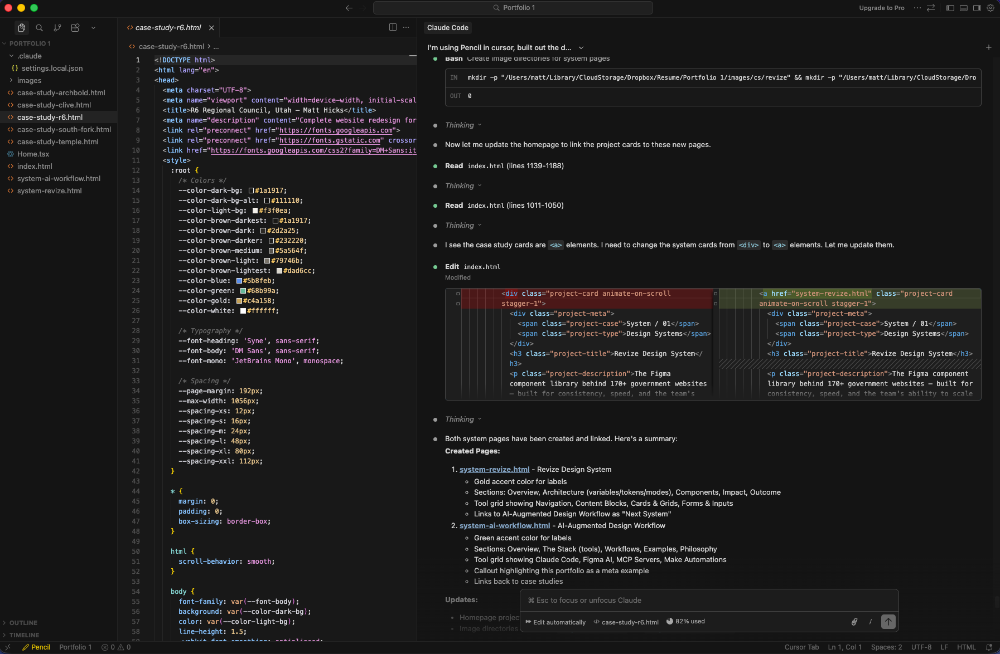
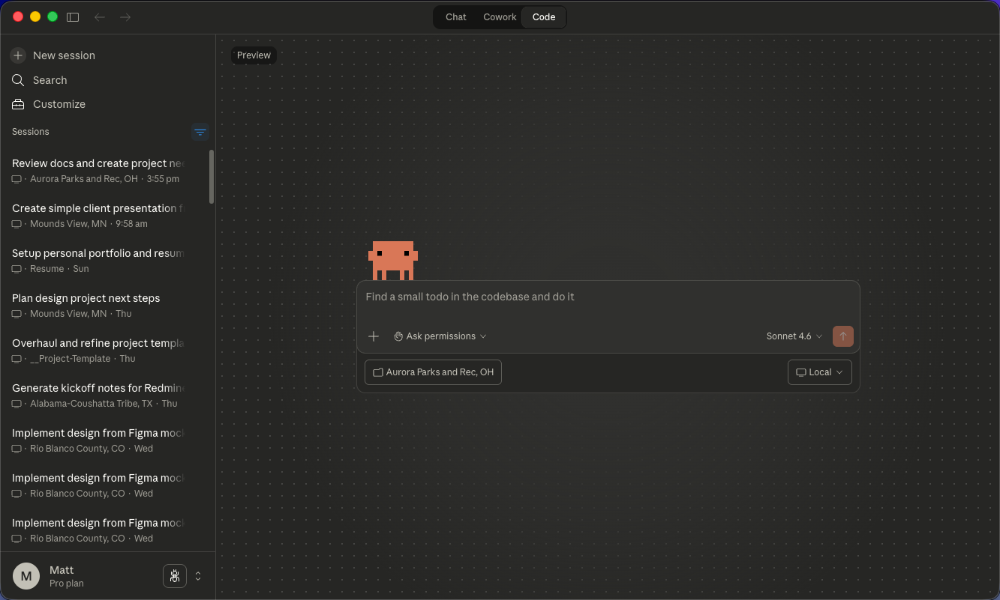
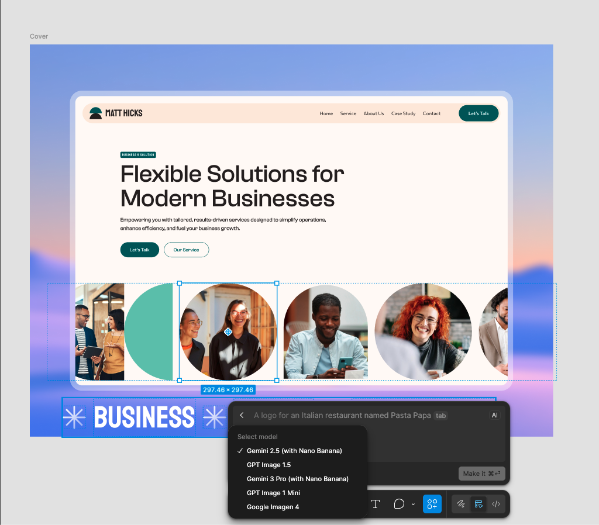
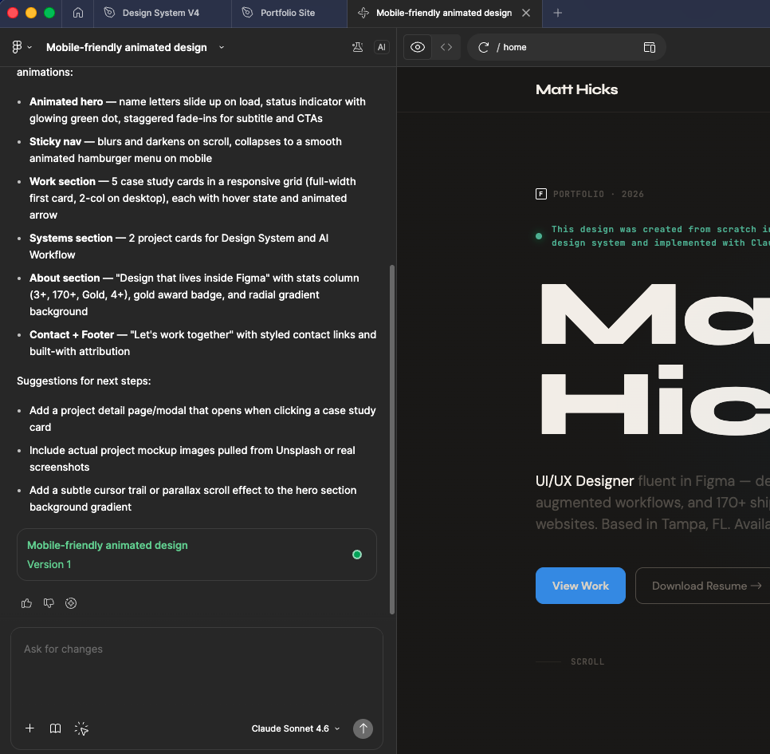

System 02
AI-Augmented
Design Workflow
Building a personal AI-native design system — Claude Code, Figma AI, MCP servers, and Make automations working in concert. Multi-hour tasks reduced to minutes.
Overview
AI as a design multiplier
This isn't about replacing design thinking — it's about removing the friction between thinking and doing. I've built an AI-augmented workflow that handles the mechanical parts of design work so I can focus on the decisions that actually matter.
The system connects Claude Code, Figma's AI features, MCP servers, and Make automations into a cohesive workflow. Tasks that used to take hours — writing design documentation, generating content variations, building presentation decks — now take minutes.
The Stack
Tools working in concert
Each tool in the stack has a specific role. Claude Code handles code generation and complex reasoning. Figma AI assists with design variations and asset generation. MCP servers connect everything to external data sources. Make orchestrates the automations that tie it all together.
Claude Code
Primary AI assistant for code generation, documentation writing, and complex multi-step reasoning tasks.
Figma AI
Design-specific AI for generating variations, suggesting improvements, and accelerating visual iteration.
MCP Servers
Model Context Protocol servers that connect Claude to Figma files, project folders, and external APIs.
Make Automations
Workflow automation platform that orchestrates multi-step processes across tools and services.
Workflow / Tools / Automations




Workflows
What actually gets automated
The goal isn't to automate everything — it's to automate the right things. Repetitive tasks, boilerplate generation, and mechanical transformations are perfect candidates. Creative decisions, client communication, and strategic thinking stay human.
Examples
Real workflows, real time savings
Philosophy
Augmentation, not replacement
The point of this system isn't to remove the designer from the process — it's to remove the friction. When mechanical tasks take minutes instead of hours, there's more time for the work that actually requires human judgment: understanding client needs, making strategic decisions, and crafting experiences that connect with people.
AI tools are multipliers. They amplify what you can do, but they don't replace what you know. The designer who understands both the tools and the craft will always outperform the one who relies on either alone.
The meta example
This portfolio site was designed in Figma and implemented entirely with Claude Code. The case study pages, the animations, the responsive behavior — all generated through the same AI-augmented workflow described here.